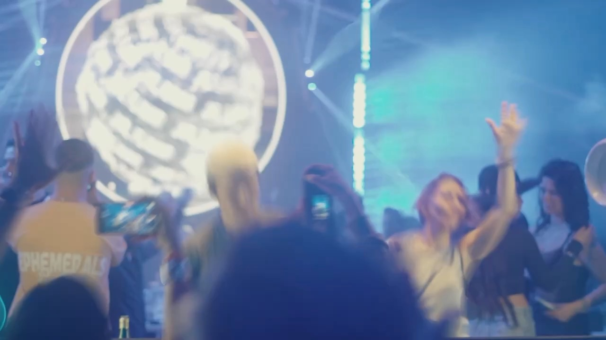
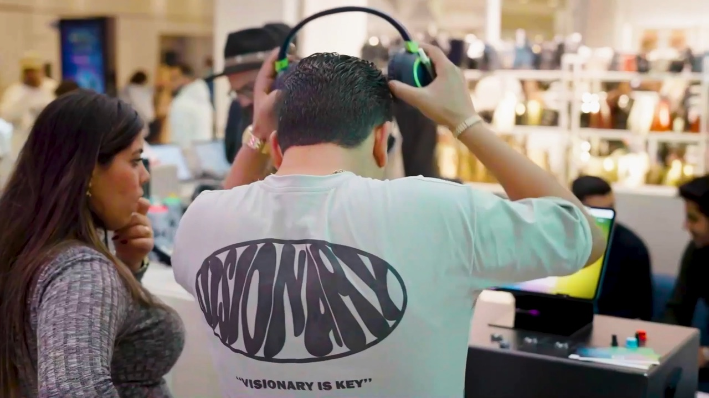
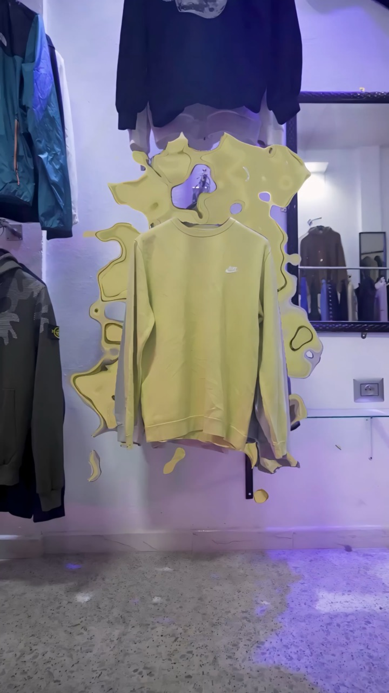
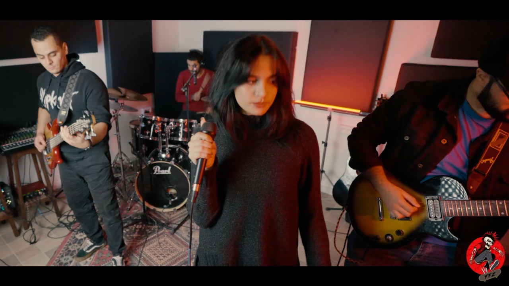
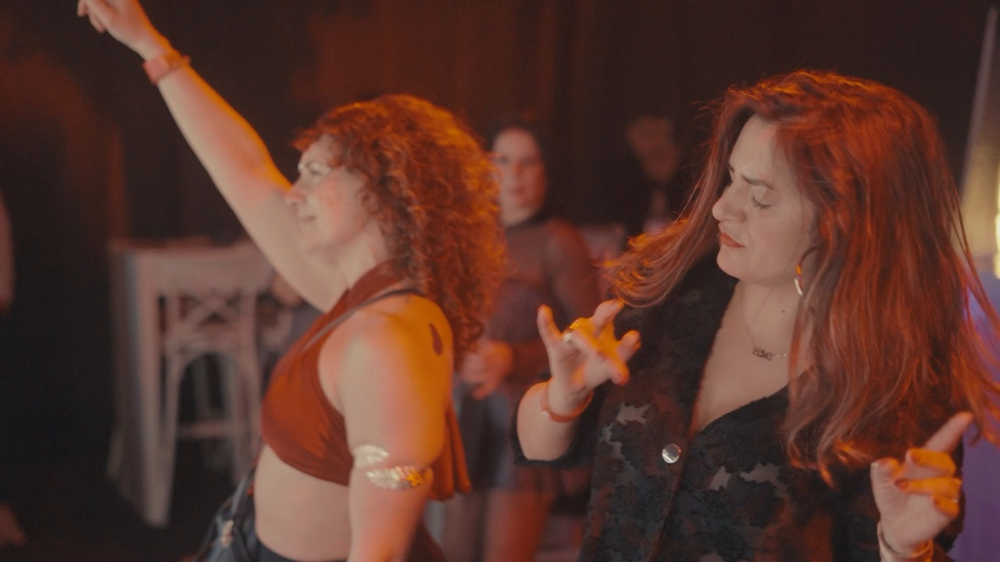
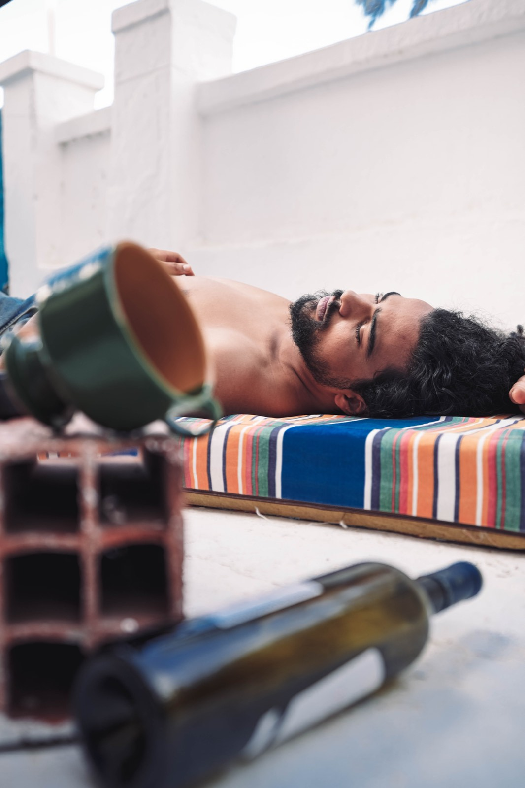
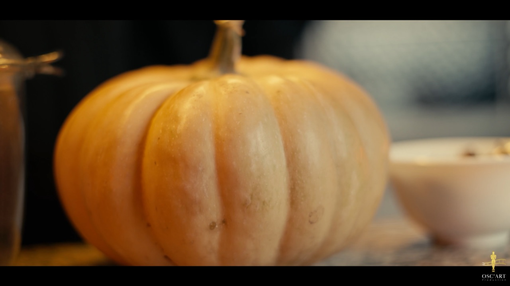

OSC'ART ProductionCreative production studio — Tunis
OSC'ART Production, production audiovisuelle en Tunisie — We create visualsthat move people.
Films publicitaires, brand content, contenus social media, clips et événements — conçus, tournés et étalonnés par notre équipe.
Nous imaginons, tournons et finalisons des images qui servent les marques et les artistes — de l’idée jusqu’au dernier étalonnage.
Réalisations
Publicité, mode, musique, événements : quelques projets récents, tournés et produits en Tunisie.
Marques & artistes avec qui nous avons tourné
Ce que nous
produisons
Une équipe, de la pré-production à la livraison. Chaque format pensé pour son support.

Publicité & Brand content
Spots, films produit et activations de marque, pensés pour la diffusion.

Social media content
Reels et formats verticaux qui arrêtent le scroll — livrés en 9:16, 4:5 et 16:9.

Clips musicaux
Clips, live sessions et contenus d’artistes, de la mise en scène à l’étalonnage.

Événementiel & Corporate
Aftermovies, soirées, conférences et mariages, en captation multi-caméras.

Photographie
Campagnes, portraits, mode et coulisses de tournage.

Post-production, CGI & IA
Montage, étalonnage DaVinci Resolve, 3D et génération vidéo.
@osc.art_production
Coulisses, reels et derniers tournages — le studio au quotidien.